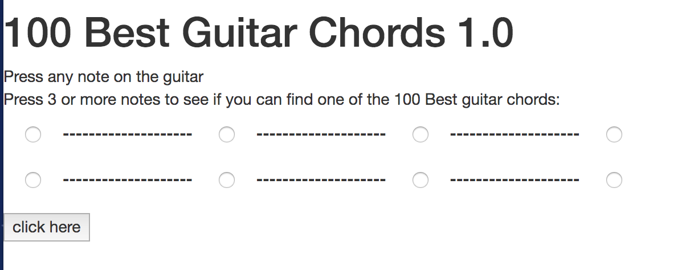

Hi. I'm Jesse Callahan
Junior Web Developer | Software Engineer

- Creating a guitar tab reader using radio input types
- This will help me better understand if..else logic and input types
- I love funk music and am currently learning how to play guitar so this helps identify chord progressions
- To see other projects I've worked on in the past click the projects ection of my website
Highlight of a project Im currently working on:
